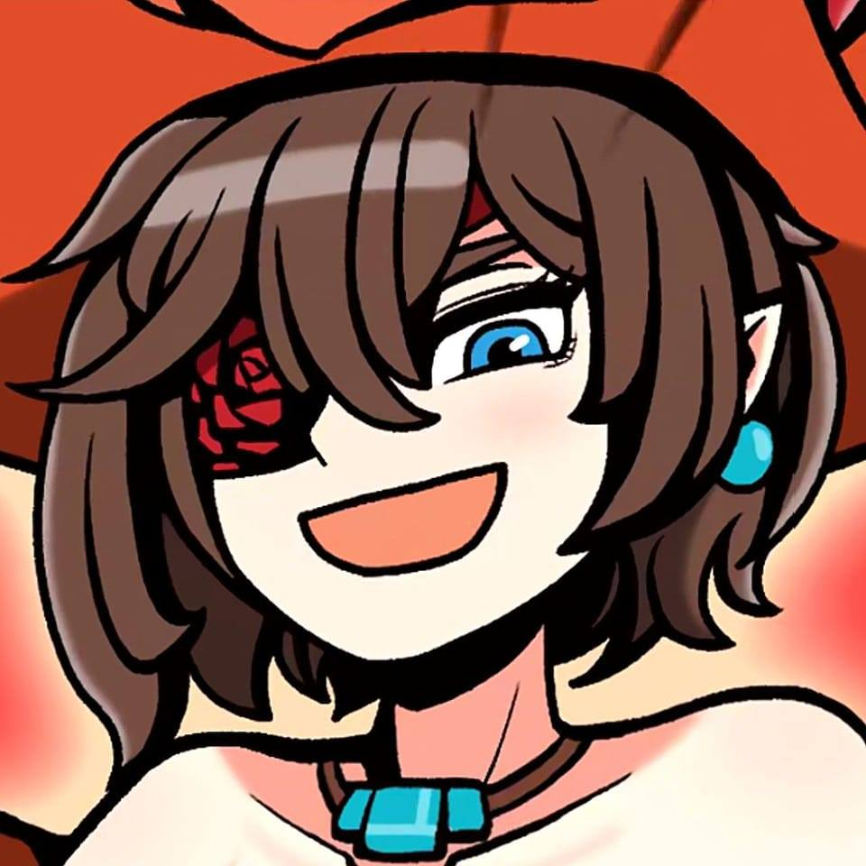

Hi! Namaku
Gusti Rayhananda Maulana M
Ini adalah personal website. Silahkan explore dan lihat apa yang saya punya. Kalau sudah lihat boleh kali donasinya, itung itung THR hehe

|  |
Pencapaian Gweh |
||||
Capai Rank Grandmaster Selama 3 Season di Honor Of KingsRank Grandmaster ibarat Rank Mythic di MLBB. Di Honor Of Kings, naikin ke rank GM gampang banget |
Artis Fesnuk di Grup GetehGimana gak artis, menang lomba low cosplay di grup geteh, masuk yutub yutuber geteh. |
||||
Menamatkan Game RDR2Loh Game Masterpiece masa gak ditanamatin. Tamat ampe 5 Kali ygy |
Punya Waifu di Game GetehKalian lihat foto di kiri nah itu waifu saya di geteh namanya Rachel |
||||
Karbit di Semua GameGame hanya hiburan jadi gak papah buat karbit di game |
Fomo di Semua Halkalau fomonya baik, bolehlah |
||||
Hero Honor Of King Yang dipake buat push GM
Allain
Allain adalah hero Fighter/Assassin di Honor of Kings yang mengandalkan serangan pedang cepat dan damage tinggi. Ia memiliki mobilitas tinggi serta kemampuan lifesteal yang membuatnya bisa bertahan lebih lama di pertempuran. Allain juga unik karena dapat menahan serangannya untuk mengisi energi, lalu melepaskannya dalam serangan beruntun yang mematikan. Hero ini cocok untuk pemain yang suka gaya bermain agresif dan solo laning.
Donghuang
Donghuang Taiyi adalah hero Tank/Support di Honor of Kings yang memiliki kemampuan crowd control kuat. Ia dikenal dengan ultimate-nya, yang bisa menahan dan mengunci pergerakan musuh, membuatnya sangat efektif dalam team fight. Selain itu, Donghuang juga memiliki mekanisme lifesteal berbasis damage yang diterima, menjadikannya hero yang sulit untuk ditumbangkan. Hero ini cocok untuk pemain yang suka mengontrol pertarungan dan melindungi rekan satu tim.
Erin
Erin adalah hero Marksman di Honor of Kings yang mengandalkan serangan jarak jauh dengan damage tinggi. Ia memiliki mobilitas yang baik dan serangan yang semakin kuat seiring waktu, menjadikannya sangat berbahaya di late game. Erin juga memiliki skill yang memungkinkan serangan area dan burst damage, membuatnya efektif dalam team fight. Hero ini cocok untuk pemain yang suka bermain sebagai damage dealer utama dan menjaga posisi dalam pertempuran.

Lady Sun
Lady Sun (juga dikenal sebagai Sun Shangxiang) adalah hero Marksman di Honor of Kings yang memiliki mobilitas tinggi dan burst damage yang kuat. Ia mengandalkan serangan kritikal dan kecepatan serangan untuk menghabisi musuh dengan cepat. Skill-nya memungkinkan ia untuk menggulingkan diri (dash) guna menghindari serangan musuh sekaligus memperkuat serangan berikutnya. Hero ini sangat cocok untuk pemain yang suka bermain agresif, menyerang dari kejauhan, dan terus bergerak untuk menghindari bahaya. Di late game, Lady Sun bisa menjadi ancaman besar dengan damage yang luar biasa! 🚀🔥
Lam
Lam adalah hero Assassin/Fighter di Honor of Kings yang mengandalkan mobilitas tinggi dan burst damage untuk menghabisi musuh dengan cepat. Ia memiliki kemampuan untuk berpindah posisi dengan cepat, membuatnya sulit ditangkap oleh lawan. Selain itu, Lam juga memiliki skill yang memungkinkannya menyerang secara beruntun dan memberikan efek crowd control pada musuh. Hero ini cocok untuk pemain yang suka gaya bermain agresif, melakukan gank, dan mengeliminasi hero musuh dengan cepat sebelum melarikan diri dari pertempuran. 🔥⚡

Li Xin
Li Xin adalah hero Fighter di Honor of Kings yang memiliki dua stance berbeda: Bright Stance dan Dark Stance, yang memungkinkan fleksibilitas dalam bertarung. a. Bright Stance memberikan ketahanan lebih tinggi, cocok untuk bertahan di garis depan. b. Dark Stance meningkatkan damage dan mobilitas, memungkinkan Li Xin untuk memberikan serangan yang lebih agresif. Keunikan Li Xin terletak pada kemampuannya untuk berpindah stance dengan mulus, memberikan kontrol yang baik dalam pertarungan. Hero ini cocok untuk pemain yang suka kombinasi serangan kuat dan fleksibilitas dalam duel. ⚔🔥
Mai Shiranui
Mai Shiranui adalah hero Assassin/Mage di Honor of Kings yang mengandalkan mobilitas tinggi dan burst damage. Ia memiliki serangan jarak menengah menggunakan kipas api, serta skill yang memungkinkan dash cepat untuk menghindari serangan atau mengejar musuh. Mai juga dapat memberikan damage area yang berkelanjutan, menjadikannya ancaman dalam team fight. Hero ini cocok untuk pemain yang suka gaya bermain lincah dan agresif, menyerang musuh dari jarak aman lalu melarikan diri sebelum tertangkap.
Marcopolo
Marco Polo adalah hero Marksman di Honor of Kings yang mengandalkan kecepatan serangan tinggi dan mobilitas lincah. Ia memiliki serangan berbasis skill yang dapat menembakkan peluru secara beruntun, memberikan damage tinggi dalam waktu singkat. Marco Polo juga bisa berpindah posisi dengan cepat, membuatnya sulit ditangkap oleh musuh. Hero ini cocok untuk pemain yang suka gaya bermain agresif dan gesit, menyerang dari kejauhan sambil terus bergerak untuk menghindari serangan lawan. 🔫⚡
Mozi
Mozi adalah hero Mage/Tank di Honor of Kings yang mengandalkan serangan jarak jauh dan crowd control. Ia memiliki kemampuan untuk menembakkan proyektil energi, memberikan damage besar serta menjebak musuh dalam kubah energi yang membatasi pergerakan mereka. Mozi juga memiliki shield yang membuatnya lebih tahan terhadap serangan. Hero ini cocok untuk pemain yang suka mengendalikan pertempuran dari kejauhan, memberikan damage sambil mengunci musuh dalam area tertentu. ⚡
CONTACT ME
Jika ada sesuatu yang mau ditanyakan bisa isi dibawah ya